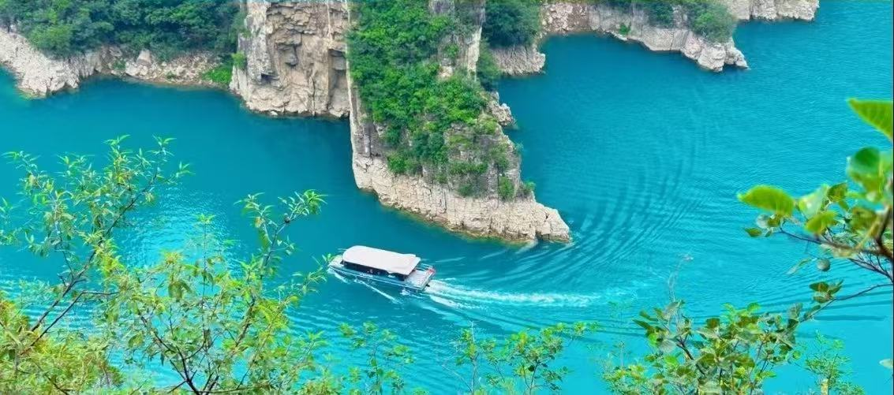
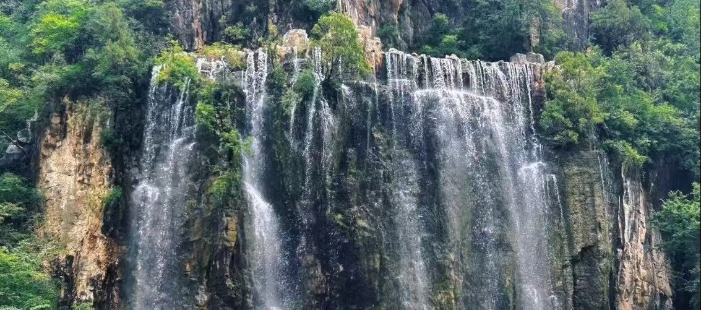

宝泉旅游区位于河南省新乡市辉县市薄壁镇，是国家4A级旅游景区、河南生态旅游示范区。景区地处太行山南麓，以“奇、险、秀、幽、雄”的峡谷地貌和丰富的水景资源闻名，素有“豫北小九寨”之美誉。
景区由大峡谷、翡翠海、龙峡湖、千瀑沟等核心片区组成，溪水清澈湛蓝、瀑布成群、峡谷幽深，融合了自然生态、休闲观光、户外运动与研学教育于一体，是夏季避暑、秋日赏叶、全年观光的绝佳目的地。

📍 地址：河南省新乡市辉县市薄壁镇宝泉旅游区
🎫 门票：成人通票含各大景点；学生凭学生证半价；60岁以上老人、1.4米以下儿童、现役军人、残疾人等凭证免门票
⏰ 开放时间
旺季（4月—10月）07:00-18:00；淡季（11月—3月）08:00-17:00，全年开放
🚗 交通指南
🍜 当地特色美食
经典一日游：景区入口 → 观光车 → 翡翠海 → 龙峡湖游船 → 大瀑布 → 千瀑沟 → 返程。
深度休闲线：入口 → 玻璃栈道 → 游龙湾 → 红石峡 → 水景步道 → 返程，轻松徒步观光。
1. 宝泉水景多，部分路段较滑，务必穿防滑鞋，注意脚下安全。
2. 夏季紫外线强，做好防晒措施；春秋早晚凉，建议带一件外套。
3. 游船、玻璃栈道等体验项目可按需购买，合理安排体力提升舒适度。
4. 节假日客流较大，建议提前线上购票，错峰入园体验更佳。
5. 水景区域蚊虫较多，夏季可携带驱蚊用品，方便舒适游览。
6. 保护生态环境，不随手扔垃圾，不戏水破坏水质，文明旅游。
春季（4月—5月）山花盛开，溪水潺潺，踏青观光绝佳；夏季（6月—8月）水量充沛，瀑布壮观，是天然避暑胜地；秋季（9月—11月）层林尽染，山色金黄，登山观景视野极佳；冬季（12月—3月）清幽静谧，可欣赏冰瀑奇观。